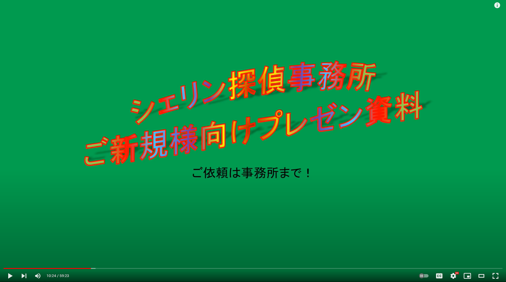

This is basically just a listing of the assignments I've done for a UI/UX class.
My confession:
I think of myself as a bad design lover who would constantly check back at a stream where this genious VTuber introduced himself with a terrible PowerPoint  I laugh so hard everytime I watch it.
My first assignment. In this project, I observed the interactions with a BoA ATM and create personas and storyboard around it.
Iterative design of an interactive interface for the startup Dumme, whose goal is to index videos with cutting edge AI models, make finding info in video as easy as Cmd+F on a web page.
It was kind of hard to mock the idea with prototypes.
It seems like the actual implementation of the interface would involve a lot of js tricks.


Redesigning an outdated, not very usable website. It was the site that I constantly checked during my Japanese culture class. I tried to make it look like one of those online reading app with a paper-like background, changed the eye-harming high contrast theme and stripped down all unnecessary (at least imo) elements.
A cheatsheet for the game Project SEKAI.
I've always wanted a website where I can easily sort and filter and see the stats of all the cards, so I made this.
Currently it only contains cards of my favorite characters, so I use her color as the theme color. The usability was OK. I'm still working on extending it.